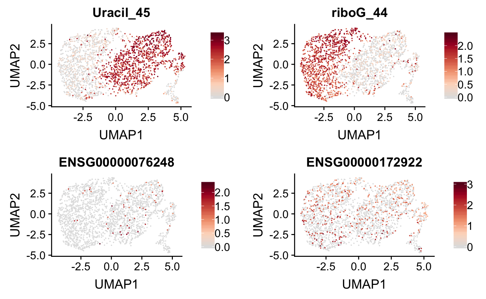

scrunchy provides analysis tools for the Single-cell reconstruction of functional heterogeneity (scrunchy).
Most single-cell analysis experiments provide information about the abundance of molecules in a cell (e.g., mRNAs). We have expanded the capability of single-cell mRNA sequencing experiments to also recover functional information—i.e. the activites of enzymes in single cells.
Example
An example data set in scrunchy includes:
A single-cell mRNA sequencing experiment (10x Genomics 3prime V2)
Counts of DNA repair on synthetic DNA substrates containing a uracil (A:U) and a ribonucleotide (rG:C).
library(scrunchy)
library(SingleCellExperiment)
# load mRNA UMI data
exp <- load_csv(scrunchy_data("mrna.csv.gz"))
# load haircut UMI data
fxn <- load_csv(scrunchy_data("haircut.csv.gz"))
fce <- create_fce(exp, fxn)The fce object now contains counts for mRNA expression and DNA repair activity for each cell.
fce
#> A MultiAssayExperiment object of 2 listed
#> experiments with user-defined names and respective classes.
#> Containing an ExperimentList class object of length 2:
#> [1] sce: SingleCellExperiment with 33694 rows and 2255 columns
#> [2] fsce: SingleCellExperiment with 122 rows and 2255 columns
#> Features:
#> experiments() - obtain the ExperimentList instance
#> colData() - the primary/phenotype DataFrame
#> sampleMap() - the sample availability DataFrame
#> `$`, `[`, `[[` - extract colData columns, subset, or experiment
#> *Format() - convert into a long or wide DataFrame
#> assays() - convert ExperimentList to a SimpleList of matricesWe can normalize this data, calculate a two-dimensional projection of the mRNA data using umap::umap(), and superimpose DNA repair activity.
fce <- normalize_counts(fce)
var_genes <- get_var_genes(fce, n_genes = 5000)
fce <- calc_pca(fce, n_pcs = 20, genes = var_genes)
#> scaling data
#> calculating pcs
fce <- calc_umap(fce, n_dims = 6)
features <- c(
"Uracil_45",
"riboG_44",
"ENSG00000076248",
"ENSG00000172922"
)
plot_cells(fce, features)